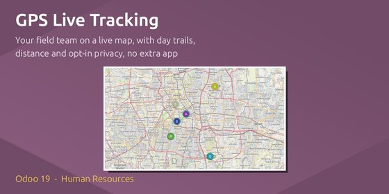
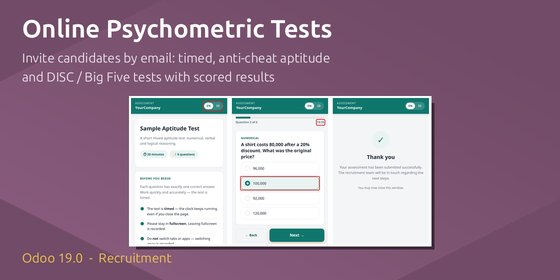

HR & Payroll apps for Odoo
Odoo add-ons for Indonesian payroll, leave, attendance, field tracking and recruitment tests. 5 apps, 0 free, for Odoo 16 to 20.
 Attendance Geofence and Selfie - GPS Check-inAttendance geofence: GPS radius per work location, a selfie at check-in and check-out, and late arrival or early leave against the working schedule.
Attendance Geofence and Selfie - GPS Check-inAttendance geofence: GPS radius per work location, a selfie at check-in and check-out, and late arrival or early leave against the working schedule.
GPS Tracking - Live Tracking of Your Field Team on a MapEmployee location tracking on a live map: chosen users share their GPS position from the browser or mobile app, with day trails, distance and hours. Indonesia Leave - Cuti, Leave Accrual, Public HolidayIndonesian leave (UU 13/2003, Cipta Kerja): statutory leave types, 12-day annual leave accrual, SKB public holidays and cuti bersama charged to annual leave.
Indonesia Leave - Cuti, Leave Accrual, Public HolidayIndonesian leave (UU 13/2003, Cipta Kerja): statutory leave types, 12-day annual leave accrual, SKB public holidays and cuti bersama charged to annual leave. Indonesia Payroll - PPh 21 TER, BPJS, THRIndonesian payroll on Odoo Community: PPh 21 TER with December recalculation, BPJS, overtime, THR, PKWT compensation and the 1721-A1.
Indonesia Payroll - PPh 21 TER, BPJS, THRIndonesian payroll on Odoo Community: PPh 21 TER with December recalculation, BPJS, overtime, THR, PKWT compensation and the 1721-A1.
Psychometric Test - Aptitude and Personality TestPsychometric test for recruitment: invite applicants to timed aptitude and personality tests (DISC, Big Five) and get scored results in Odoo.